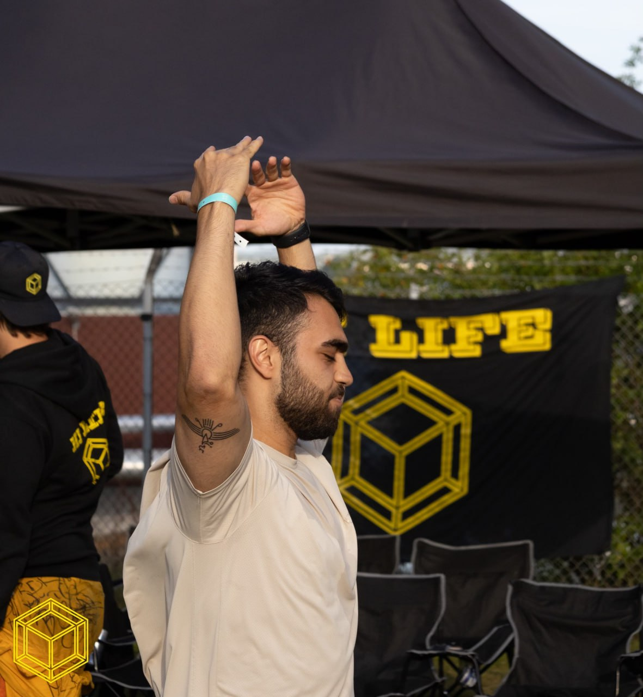

Who Am I?
Today I study Web Development and Graphic Design at Jönköping University. I studied the International Baccalaureate Program (IB diploma) at Hvitfeldtska Gymnasiet in Gothenburg and in 2024 I graduated. My favorite subject is Design Technology which basically deals with UX, 3D design, product design etc. In my spare time I work out at the gym, listen to music and play the guitar. I am a social person who thrives very well in groups and is responsible. Right now I want to gather work experience and gain a better understanding of how I can use my education practically. I am an easy learner and set foot in new environments.